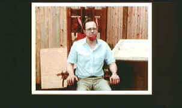

| Mr.
Death/A-,B+ |
| Universal/1999/92/ANA
1.85 |
Errol Morris makes unusual documentaries. Morris mixes
re-enactments with actual footage, adds elements of stylized photography
to typical talking head shots, realizing a dynamic hybrid film
style. Along with the stylization, Morris tackles off-beat
subject matter. Whether it's an innocent man or compulsive
behavior, Morris surprises viewers with his ability to suck them
into his vision. Mr. Death: The Rise and Fall of Fred
A. Leuchter, Jr. may be the most surprising of them all.
This time out the filmmaker looks at the career of Fred A.
Leuchter, Jr., an engineer whose fascination with death row led
to some scary corners of the world and mind.
 |
| Leuchter
tries out the chair. ©Universal |
Leuchter's initial reputation was built on his macabre
fascination with methods of capital punishment. Morris begins
his exploration as Leuchter relates how he found current
electric chairs in a sad and inhumane state of disrepair. He
designed and built his own chairs and sold them to a number of
states that used that method of execution. As his reputation as
an expert in execution equipment grew, he was hired to design a
more efficient gas chamber, and build a lethal injection death
machine. He even got to refurbish and make a gallows more
efficient.
Morris sets you up in the early going
with some off-kilter responses from Leuchter. His little jokes
about the electric chair, his comments on humane execution
coupled with descriptions of frying human fat strike dissonant
emotional chords. Where did this guy come from? Who is Fred
Leuchter? Leuchter's father was a supervisor in charge of
transportation for a prison system in Massachusetts. Leuchter
hung around the prisons, was fascinated with the electric chair,
and even tried it on for size on occasion.
It's all cut and dry, truly macabre, and a
little bit weird, until the Leuchter dark odyssey takes a turn.
Because of his reputation as an expert in death machinery,
Leuchter is contacted by the defense team of Ernst Zundel,
a German emigrant living in Canada being tried for
publishing a book denying The Holocaust. Leuchter is dispatched
to the Polish death camps to seek out evidence that the gas
chambers indeed did exist and function. Morris is a subtle
filmmaker. He presents the material in an uncomfortable way.
Questions of right and wrong are complex.
Now Morris's film takes on a whole new
path. Still focusing on the slightly bizarre Fred Leuchter, the
new question becomes whether the horrors of Nazi Germany's
execution of millions of Jews actually happened. Leuchter
gathers evidence, his Polish scrapings recorded on film. Is
Leuchter an expert. Does his investigation use fool-proof
scientific methods. What is the result of Leuchter's testimony.
Through Morris's magnifying camera lens the story unfolds with
elegant, seductive, precision. Some questions are left open.
Leuchter's motives are not clear. Mr. Death is definitely
one fascinating movie trip worth making.
The DVD is clean and extracts the
material as close to Morris's vision as possible. Grainy home
movies and video-taped sequences add a varied look to the
material, contrasting sharply with Morris's most composed
visuals. Grain is handled tightly, color is accurate and the
picture is kept is sharp focus given the various mediums
included. The Dolby Digital 2-channel surround sound is clean.
|
|

Selections from the feature archive
include articles on
Akira Kurosawa, Frank
Darabont, Blonde
Bimbos, Hollywood
Street Gangs, or Vietnam:
The Hollywood Pariah, and many more....
Film noir: The phrase hangs awkwardly on the tongue, shadowy
images peek out from behind half-closed doors. Click on the Noir
and Noir Again symbol for a look into the dark spaces of
Hollywood's revisiting of film noir.

The
Movie Poster Archive include extensive poster images from the
films of stars like Susan Hayward, Kirk Douglas, Katharine
Hepburn and many more. This month's featured star is Doris
Day.

They may
be judgmental, but that's the point, isn't it. Lots of DVD reviews
plus news and more.
Click on the link to visit the judge's chambers.
 Lovers
of Hong Kong movies will relish
MC4's site that includes reviews and other information
about the Hong Kong movie scene. Lovers
of Hong Kong movies will relish
MC4's site that includes reviews and other information
about the Hong Kong movie scene.
 Gary
Morris's insightful publication Bright Lights Film Journal
turns the celluloid in films from a unique perspective. Click on the image above for more pure movie views. Gary
Morris's insightful publication Bright Lights Film Journal
turns the celluloid in films from a unique perspective. Click on the image above for more pure movie views.
 A huge selection of French movie posters with images galore. Don't miss this site if you
ate interested in lovely French posters.
A huge selection of French movie posters with images galore. Don't miss this site if you
ate interested in lovely French posters.

Check out these DVD recommendations from
the Films on Disc DVD
Review Archive. New releases are constantly in our face, but catalog
gems should not be forgotten.
|